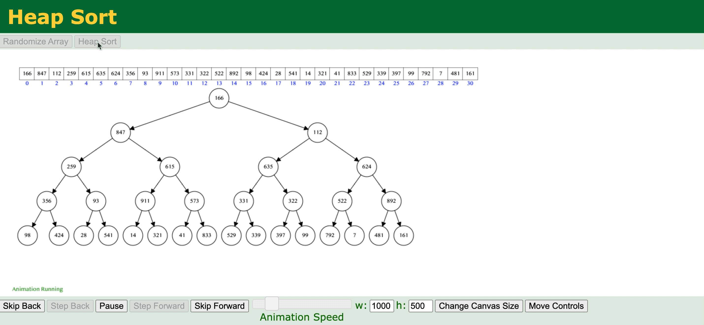

2022.10.22
比如：5,6,7,1,3,9
-> 第一趟(第一个和1元素换位置) -> [1],6,7,[5],3,9
-> 第二趟(第二个和3元素换位置) -> 1,[3],7,5,[6],9
空间效率：O(1)
时间效率：O(n^2)
稳定性：不稳定

(Gif图片下载)
【答案】：D
【答案】：C
【答案】：D
【答案】：A->D
【答案】：D
【答案】：C
【答案】：B
【答案】：C，D->C
【答案】：DB->AD
对关键码序列 23，17，72，60，25,8，68，71，52}进行堆排序，输出两个最小关键码后的剩余堆是（） A. {23, 72, 60, 25, 68, 71, 52) B. {23, 25, 52, 60, 71, 72, 68} C. {71, 25, 23, 52, 60, 72, 68} D. {23, 25, 68, 52, 60, 72, 71}
【答案】：D
【2009 统考真题】已知关键字序列5,8，12，19,28,20，15，22 是小根堆，插入关键字3，调整好后得到的小根堆是（） A. 3, 5, 12, 8, 28, 20, 15, 22, 19 B. 3, 5, 12, 19, 20, 15, 22, 8, 28 C. 3, 8, 12, 5, 20, 15, 22, 28, 19 D. 3, 12, 5, 8, 28, 20, 15, 22, 19
【答案】：A
【2011统考真题】己知序列25,13,10，12,9是大根堆，在序列尾部插入新元素18，将其再调整为大根堆，调整过程中元素之间进行的比较次数是（ ） A. 1 B. 2 C. 4 D. 5
【答案】：B
下列4种排序方法中，排序过程中的比较次数与序列初始状态无关的是（）。 A.选择排序法 B.插入排序法 C.快速排序法 D.冒泡排序法
【答案】：A
【2015 统考真题】已知小根堆为8,15,10,21,34,16,12，删除关键字8之后需重建堆，在此过程中，关键字之间的比较次数是（ ） A. 1 B. 2 C. 3 D. 5 【答案】：B->C
注意删除一个元素之后直接把他的最右下放到自己身上，并不是子结点选一个最小的，而是和pop顶然后调整的步骤一样。
【2018 统考真题】在将序列（6,1,5,9,8,4,7)建成大根堆时，正确的序列变化过程是(）。 A. 6,1,7,9,8,4,5 - 6,9,7,1,8,4,5 - 9,6,7,1,8,4,5 - 9,8,7,1,6,4,5 B. 6,9,5,1,8,4,7 - 6,9,7,1,8,4,5 - 9,6,7,1,8,4,5 - 9,8,7,1,6,4,5 C. 6,9,5,1,8,4,7 - 9,6,5,1,8,4,7 - 9,6,7,1,8,4,5 - 9,8,7,1,6,4,5 D. 6,1,7,9,8,4,5 - 7,1,6,9,8,4,5 - 7,9,6,1,8,4,5 - 9,7,6,1,8,4,5 - 9,8,6,1,7,4,5
【答案】：A
【2020 统考真题】下列关于大根堆（至少含2个元素）的叙述中，正确的是(）。
I. 可以将堆视为一採完全二叉树 II. 可以采用顺序存储方式保存堆 III. 可以将堆视为一颗二叉排序树 IV. 堆中的次大值一定在根的下一层 A. 仅II B. 仅II、III C. 仅I、II和IV D. I、III和IV
【答案】：C
【2021 统考真题】将关键字6,9,1，5,8，4，7依次插入到初始为空的大根堆五中，得到的是（）. A. 9, 8, 7, 6, 5, 4, 1 B. 9, 8, 7, 5, 6, 1, 4 C. 9, 8, 7, 5, 6, 4, 1 D. 9, 6, 7, 5, 8, 4, 1
【答案】：B
{kind=link}